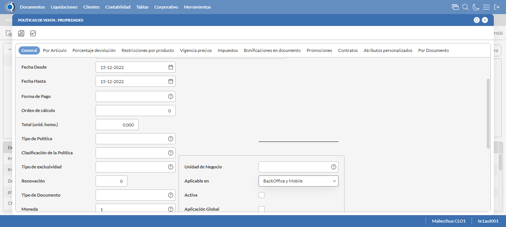
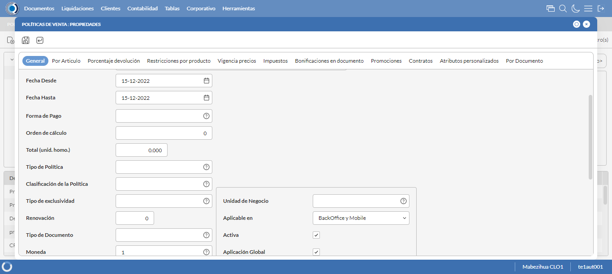
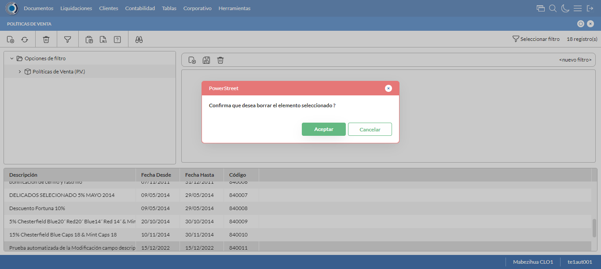

Desarrollado por : Area de Testing PWST
Fecha y hora de inicio : 2022-12-15 12:44:16
Duracion : 0:01:02.489244
Resultado : Total 8，Correctos 7 ，Errores 1 ，Taza de resultado 87.50%
Resumen 87.50% Errores 1 Fallidos 0 Correctos 7 Test realizados 8
| Caso de Prueba | Total | Correctos | Fallido | Error | Detalles | Captura del error |
| PoliticasVenta4.Test: Escenario 1 de Politicas de Venta Bonificacion Grupos por Articulo | 8 | 7 | 0 | 1 | Detalles | |
test |
ft1_1: 2022-12-15 12:44:18,610 - root - INFO - Se abre el chrome
2022-12-15 12:44:19,991 - root - INFO - Entra a la URL
2022-12-15 12:44:20,144 - root - INFO - Maximiza la pantalla
Traceback (most recent call last):
File "C:\Users\pwst\AppData\Local\Programs\Python\Python311\Lib\site-packages\selenium\webdriver\remote\switch_to.py", line 88, in frame
frame_reference = self._driver.find_element(By.ID, frame_reference)
^^^^^^^^^^^^^^^^^^^^^^^^^^^^^^^^^^^^^^^^^^^^^^^^^
File "C:\Users\pwst\AppData\Local\Programs\Python\Python311\Lib\site-packages\selenium\webdriver\remote\webdriver.py", line 861, in find_element
return self.execute(Command.FIND_ELEMENT, {"using": by, "value": value})["value"]
^^^^^^^^^^^^^^^^^^^^^^^^^^^^^^^^^^^^^^^^^^^^^^^^^^^^^^^^^^^^^^^^^
File "C:\Users\pwst\AppData\Local\Programs\Python\Python311\Lib\site-packages\selenium\webdriver\remote\webdriver.py", line 444, in execute
self.error_handler.check_response(response)
File "C:\Users\pwst\AppData\Local\Programs\Python\Python311\Lib\site-packages\selenium\webdriver\remote\errorhandler.py", line 249, in check_response
raise exception_class(message, screen, stacktrace)
selenium.common.exceptions.NoSuchElementException: Message: no such element: Unable to locate element: {"method":"css selector","selector":"[id="mainFrame"]"}
(Session info: chrome=108.0.5359.100)
Stacktrace:
Backtrace:
(No symbol) [0x0030F243]
(No symbol) [0x00297FD1]
(No symbol) [0x0018D04D]
(No symbol) [0x001BC0B0]
(No symbol) [0x001BC22B]
(No symbol) [0x001EE612]
(No symbol) [0x001D85D4]
(No symbol) [0x001EC9EB]
(No symbol) [0x001D8386]
(No symbol) [0x001B163C]
(No symbol) [0x001B269D]
GetHandleVerifier [0x005A9A22+2655074]
GetHandleVerifier [0x0059CA24+2601828]
GetHandleVerifier [0x003B8C0A+619850]
GetHandleVerifier [0x003B7830+614768]
(No symbol) [0x002A05FC]
(No symbol) [0x002A5968]
(No symbol) [0x002A5A55]
(No symbol) [0x002B051B]
BaseThreadInitThunk [0x76ECFEF9+25]
RtlGetAppContainerNamedObjectPath [0x77477BBE+286]
RtlGetAppContainerNamedObjectPath [0x77477B8E+238]
During handling of the above exception, another exception occurred:
Traceback (most recent call last):
File "C:\Users\pwst\AppData\Local\Programs\Python\Python311\Lib\site-packages\selenium\webdriver\remote\switch_to.py", line 91, in frame
frame_reference = self._driver.find_element(By.NAME, frame_reference)
^^^^^^^^^^^^^^^^^^^^^^^^^^^^^^^^^^^^^^^^^^^^^^^^^^^
File "C:\Users\pwst\AppData\Local\Programs\Python\Python311\Lib\site-packages\selenium\webdriver\remote\webdriver.py", line 861, in find_element
return self.execute(Command.FIND_ELEMENT, {"using": by, "value": value})["value"]
^^^^^^^^^^^^^^^^^^^^^^^^^^^^^^^^^^^^^^^^^^^^^^^^^^^^^^^^^^^^^^^^^
File "C:\Users\pwst\AppData\Local\Programs\Python\Python311\Lib\site-packages\selenium\webdriver\remote\webdriver.py", line 444, in execute
self.error_handler.check_response(response)
File "C:\Users\pwst\AppData\Local\Programs\Python\Python311\Lib\site-packages\selenium\webdriver\remote\errorhandler.py", line 249, in check_response
raise exception_class(message, screen, stacktrace)
selenium.common.exceptions.NoSuchElementException: Message: no such element: Unable to locate element: {"method":"css selector","selector":"[name="mainFrame"]"}
(Session info: chrome=108.0.5359.100)
Stacktrace:
Backtrace:
(No symbol) [0x0030F243]
(No symbol) [0x00297FD1]
(No symbol) [0x0018D04D]
(No symbol) [0x001BC0B0]
(No symbol) [0x001BC22B]
(No symbol) [0x001EE612]
(No symbol) [0x001D85D4]
(No symbol) [0x001EC9EB]
(No symbol) [0x001D8386]
(No symbol) [0x001B163C]
(No symbol) [0x001B269D]
GetHandleVerifier [0x005A9A22+2655074]
GetHandleVerifier [0x0059CA24+2601828]
GetHandleVerifier [0x003B8C0A+619850]
GetHandleVerifier [0x003B7830+614768]
(No symbol) [0x002A05FC]
(No symbol) [0x002A5968]
(No symbol) [0x002A5A55]
(No symbol) [0x002B051B]
BaseThreadInitThunk [0x76ECFEF9+25]
RtlGetAppContainerNamedObjectPath [0x77477BBE+286]
RtlGetAppContainerNamedObjectPath [0x77477B8E+238]
During handling of the above exception, another exception occurred:
Traceback (most recent call last):
File "C:\xampp\htdocs\Versiones\automatizaciones\AutoPWST\04PV\testCase\PoliticasVenta4.py", line 31, in test
self.driver.switch_to.frame("mainFrame")
File "C:\Users\pwst\AppData\Local\Programs\Python\Python311\Lib\site-packages\selenium\webdriver\remote\switch_to.py", line 93, in frame
raise NoSuchFrameException(frame_reference)
selenium.common.exceptions.NoSuchFrameException: Message: mainFrame
|
|
||||
test_000: Ingresa a la base de datos |
pt1_2: 2022-12-15 12:44:23,287 - root - INFO - Escribe el usuario
2022-12-15 12:44:23,447 - root - INFO - Escribe la contraseña
2022-12-15 12:44:23,574 - root - INFO - Se dio clic en el boton ingresar
2022-12-15 12:44:24,388 - root - INFO - Ejecutar Enterprise
2022-12-15 12:44:28,450 - root - INFO - Cambia entre pestañas
|
|
||||
test_001: Abre menu y ejecuta pantalla |
pt1_3: 2022-12-15 12:44:39,259 - root - INFO - Abre la pantalla de Politicas de Venta
2022-12-15 12:44:39,932 - root - INFO - La pantalla ejecutada es Politicas de Venta
2022-12-15 12:44:39,933 - root - INFO - Captura: C:\xampp\htdocs\Versiones\automatizaciones\AutoPWST\04PV\report\img screen：20221215_12_44_39.png
2022-12-15 12:44:40,227 - root - INFO - Se presiona el boton 'Nuevo', para crear un nuevo registro.
|

|
||||
test_002: Abre la ventana de nuevo y crear un registro |
pt1_4: 2022-12-15 12:44:41,307 - root - INFO - Se abrio la pantalla para el ingreso de un registro nuevo.
2022-12-15 12:44:41,363 - root - INFO - El campo 'Codigo' si se encuentra visible.
2022-12-15 12:44:41,409 - root - INFO - El campo 'Codigo Alternativo' si se encuentra visible.
2022-12-15 12:44:41,458 - root - INFO - El campo 'Descrición' si se encuentra visible.
2022-12-15 12:44:41,510 - root - INFO - El campo 'Moneda' si se encuentra visible.
2022-12-15 12:44:41,569 - root - INFO - El campo 'Aplicable en' si se encuentra visible.
2022-12-15 12:44:41,621 - root - INFO - El campo 'Activa' si se encuentra visible.
2022-12-15 12:44:41,668 - root - INFO - El campo 'Aplicación Global' si se encuentra visible.
2022-12-15 12:44:41,758 - root - INFO - Ingresa el codigo del nuevo registro
2022-12-15 12:44:41,890 - root - INFO - Ingresa el codigo alternativo del nuevo registro
2022-12-15 12:44:42,111 - root - INFO - Ingresa la descripción del nuevo registro
2022-12-15 12:44:43,814 - root - INFO - Se dió doble click en el registro de Moneda.
2022-12-15 12:44:44,458 - root - INFO - Se dió click en la opción BackOffice y Mobilel.
2022-12-15 12:44:44,459 - root - INFO - Captura: C:\xampp\htdocs\Versiones\automatizaciones\AutoPWST\04PV\report\img screen：20221215_12_44_44.png
2022-12-15 12:44:44,727 - root - INFO - Se dió click en el checkbox Activa.
2022-12-15 12:44:44,831 - root - INFO - Se dió click en el checkbox Aplicación Global.
2022-12-15 12:44:44,947 - root - INFO - Se hace el cambio a la pestaña Por Articulo para continuar con el registro nuevo
2022-12-15 12:44:45,640 - root - INFO - Se presiona el boton 'Nuevo', para crear un nuevo registro de Por Articulo.
2022-12-15 12:44:46,229 - root - INFO - El campo 'Grupo Política' si se encuentra visible.
2022-12-15 12:44:46,276 - root - INFO - El campo 'Artículo a Bonificar' si se encuentra visible.
2022-12-15 12:44:46,424 - root - INFO - El campo 'Cantidad a Bonificar(Packing)' si se encuentra visible.
2022-12-15 12:44:46,473 - root - INFO - El campo 'Cantidad en Bonificación(Unidad)' si se encuentra visible.
2022-12-15 12:44:46,522 - root - INFO - El campo 'Tope Descuento 1' si se encuentra visible.
2022-12-15 12:44:46,571 - root - INFO - El campo 'Tope Descuento 2' si se encuentra visible.
2022-12-15 12:44:46,671 - root - INFO - Ingresa el Grupo Politica del nuevo registro
2022-12-15 12:44:46,818 - root - INFO - Ingresa el Articulo a bonificar del nuevo registro
2022-12-15 12:44:47,008 - root - INFO - Ingresa la Cantidad a Bonificar del nuevo registro
2022-12-15 12:44:47,406 - root - INFO - Ingresa la Cantidad en Bonificación del nuevo registro
2022-12-15 12:44:47,694 - root - INFO - Ingresa el Tope Descuento 2 del nuevo registro
2022-12-15 12:44:48,057 - root - INFO - Ingresa el Tope Descuento 2 del nuevo registro
2022-12-15 12:44:48,169 - root - INFO - Se presiona el boton 'Guardar', para guardar el registro de Por Articulo.
2022-12-15 12:44:48,780 - root - INFO - Se da clic en el boton Guardar; se debe crear un nuevo registro.
|
 | ||||
test_003: Repetir el registro creado anteriormente |
pt1_5: 2022-12-15 12:44:49,236 - root - INFO - Se presiona el boton 'Refrescar', para crear un nuevo registro igual al anterior.
2022-12-15 12:44:51,420 - root - INFO - Se presiona el boton 'Nuevo', para crear un nuevo registro igual al anterior.
2022-12-15 12:44:51,986 - root - INFO - Se abrio la pantalla para el ingreso de un registro nuevo.
2022-12-15 12:44:52,133 - root - INFO - Ingresa el codigo del nuevo registro
2022-12-15 12:44:52,329 - root - INFO - Ingresa el codigo alternativo del nuevo registro
2022-12-15 12:44:52,551 - root - INFO - Ingresa la descripción del nuevo registro
2022-12-15 12:44:53,512 - root - INFO - Se dió doble click en el registro de Moneda.
2022-12-15 12:44:54,102 - root - INFO - Se dió click en la opciónBackOffice y Mobile.
2022-12-15 12:44:54,103 - root - INFO - Captura: C:\xampp\htdocs\Versiones\automatizaciones\AutoPWST\04PV\report\img screen：20221215_12_44_54.png
2022-12-15 12:44:54,332 - root - INFO - Se dió click en el checkbox Activa.
2022-12-15 12:44:54,427 - root - INFO - Se dió click en el checkbox Aplicación Global.
2022-12-15 12:44:54,534 - root - INFO - Se da clic en el boton Guardar; NO se debe crear un nuevo registro.
2022-12-15 12:44:54,535 - root - INFO - Captura: C:\xampp\htdocs\Versiones\automatizaciones\AutoPWST\04PV\report\img screen：20221215_12_44_54.png
2022-12-15 12:44:54,998 - root - INFO - Se presiona el boton 'Cerrar', para cerrar el mensaje de duplicidad de llave primaria
2022-12-15 12:44:55,206 - root - INFO - Se presiona el boton 'Cerrar', para cerrar la ventana
|
 | ||||
test_004: Modificar el registro |
pt1_6: 2022-12-15 12:44:55,375 - root - INFO - Se presiona el boton 'Refrescar', para proceder a modificar el registro.
2022-12-15 12:44:58,088 - root - INFO - Se da clic en el registro creado, para proceder a modificarlo.
2022-12-15 12:44:58,894 - root - INFO - Se modifica el contenido del campo Codigo Alternativo
2022-12-15 12:44:59,179 - root - INFO - Se modifica el contenido del campo Descripcion
2022-12-15 12:44:59,266 - root - INFO - Se dió click en el checkbox Aplicación Global.
2022-12-15 12:44:59,369 - root - INFO - Se hace el cambio a la pestaña para continuar con la modificación del registro
2022-12-15 12:45:00,571 - root - INFO - Se da clic en el registro de Por Articulo, para proceder a modificarlo.
2022-12-15 12:45:01,279 - root - INFO - Se modifica el contenido del campo Grupo Politica
2022-12-15 12:45:01,642 - root - INFO - Se modifica el contenido del campo Articulo a Bonificar
2022-12-15 12:45:02,053 - root - INFO - Se modifica el contenido del campo Cantidad a Bonificar
2022-12-15 12:45:02,449 - root - INFO - Se modifica el contenido del campo Cantidad en Bonificación
2022-12-15 12:45:02,591 - root - INFO - Se presiona el boton 'Guardar', para guardar la modificación del registro de Por Articulo.
2022-12-15 12:45:02,959 - root - INFO - Se da clic en el boton Guardar; se debe modificar la informacion del registro.
|
|
||||
test_005: Eliminar el registro creado |
pt1_7: 2022-12-15 12:45:03,636 - root - INFO - Se presiona el boton 'Refrescar', para proceder a eliminar el registro.
2022-12-15 12:45:06,242 - root - INFO - Se da doble click en el registro creado, para proceder a eliminarlo.
2022-12-15 12:45:06,929 - root - INFO - Se hace el cambio a la pestaña para continuar con la eliminación del registro
2022-12-15 12:45:08,042 - root - INFO - Se da clic en el registro de Por Articulo, para proceder a eliminarlo.
2022-12-15 12:45:08,160 - root - INFO - Se presiona el boton 'Eliminar', para eliminar el registro de Por Aerticulo.
2022-12-15 12:45:08,350 - root - INFO - Se da clic en el boton Guardar; se debe modificar la informacion del registro.
2022-12-15 12:45:08,978 - root - INFO - Se da clic en el registro creado, para proceder a eliminarlo.
2022-12-15 12:45:09,107 - root - INFO - Se presiona el boton 'Eliminar', para eliminar el registro.
2022-12-15 12:45:12,109 - root - INFO - Captura: C:\xampp\htdocs\Versiones\automatizaciones\AutoPWST\04PV\report\img screen：20221215_12_45_12.png
2022-12-15 12:45:12,360 - root - INFO - Se confirma el eliminado del registro
2022-12-15 12:45:12,666 - root - INFO - Se presiona el boton 'Refrescar', para verificar si el registro ha sido eliminado.
2022-12-15 12:45:14,808 - root - INFO - Se presiona el boton 'Cerrar', para cerrar la pantalla de Politicas de Venta.
|
 | ||||
test_006: Cerrar_Navegador |
pt1_8: 2022-12-15 12:45:19,282 - root - INFO - Se cierra chrome
|
|
||||
| Caso de prueba | 8 | 7 | 0 | 1 | Taza de resultado：87.50% | |